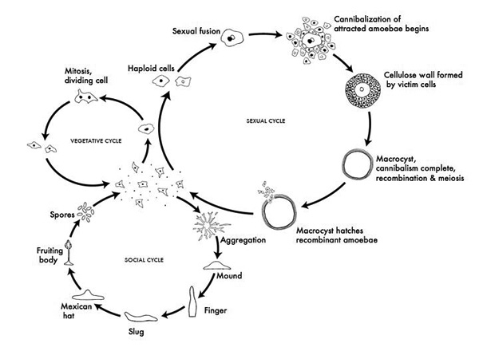

|  |
Click for a High Resolution Image
Most of its life, this haploid social amoeba undergoes the vegetative cycle, preying upon bacteria in the soil, and periodically dividing mitotically. When food is scarce, either the sexual cycle or the social cycle begins. Under the social cycle, amoebae aggregate to cAMP by the thousands, and form a motile slug, which moves towards light. Ultimately the slug forms a fruiting body in which about 20% of the cells die to lift the remaining cells up to a better place for sporulation and dispersal. Under the sexual cycle, amoebae aggregate to cAMP and sex pheromones, and two cells of opposite mating types fuse, and then begin consuming the other attracted cells. Before they are consumed, some of the prey cells form a cellulose wall around the entire group. When cannibalism is complete, the giant diploid cell is a hardy macrocyst which eventually undergoes recombination and meiosis, and hatches hundreds of recombinants. Not drawn to scale.
Permission: CC Creative Commons Attribution - Share Alike 3.0, David Brown & Joan E. Strassmann